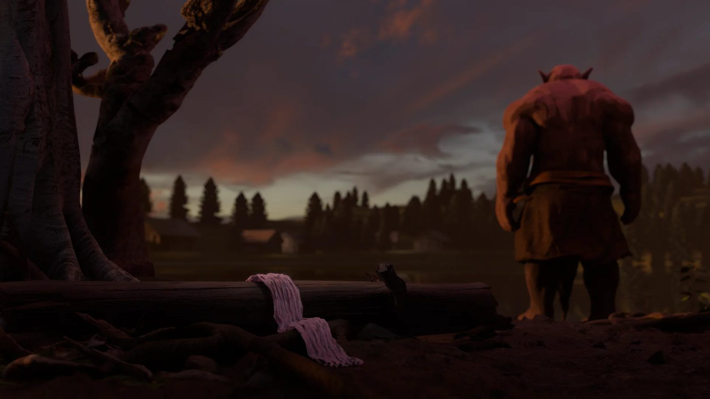
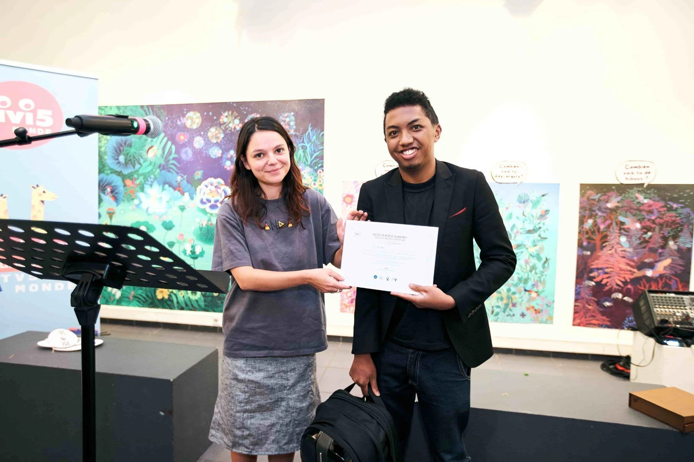

Projets / Trimobé, le foulard rouge
Trimobé, le foulard rouge
Un ogre lié à un lac cherche sa place parmi les humains. Le projet a reçu le Prix du meilleur pitch aux Rencontres du FIFAM 2026.


Un ogre lié à un lac cherche sa place parmi les humains. Le projet a reçu le Prix du meilleur pitch aux Rencontres du FIFAM 2026.

